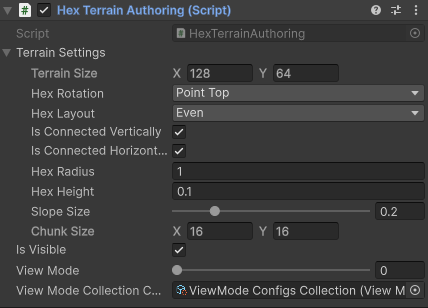
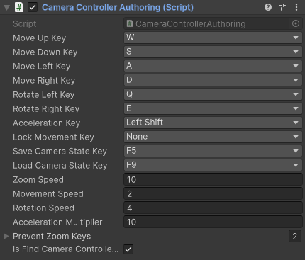
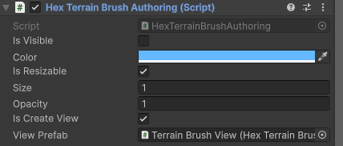
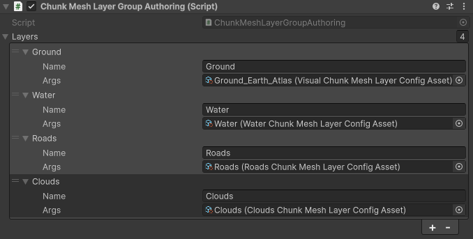
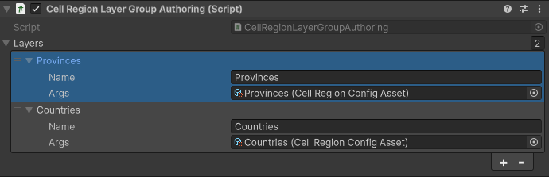
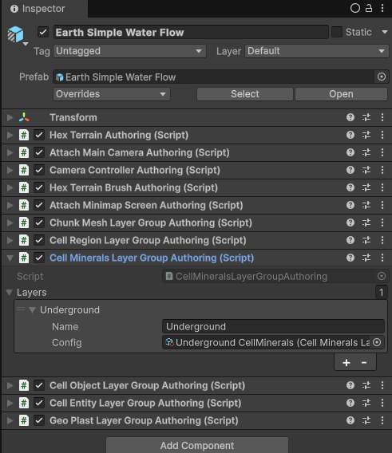
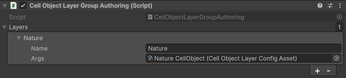
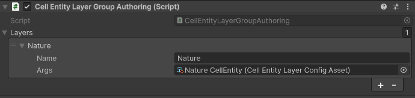
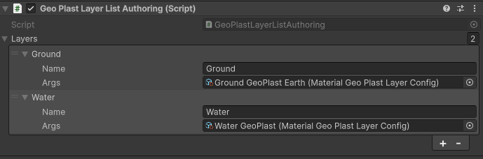
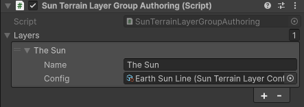

How to create a Terrain Entity
Baking
Place a TerrainEntity authoring prefab game object on a subscene. Add all needed components to it:
HexTerrain

This component contains terrain settings such as TerrainSize in cells (x, y), HexRotation (Point Top/Flat Top), HexLayout (Even/Odd), HexRadius (the lenght of the hexagon side), HexHeight (1 unit of height on HeightMap translates to this height of cell in meters, think of it as a vertical terrain scale), SlopeSize (share of the hex radius dedicated to slope between two adjacent cells), IsConnectedVertically and IsConnectedHorizontally flags (allow to connect opposite sides of the terrain, to create an illusion of a round planet like in Civilization), and ChunkSize (width and height of one terrain chunk in cells. 16x16 is an optimal value, as the Unity engine has a hard limit for the amount of vertices per mesh, and the ChunkMeshLayer generates one mesh per chunk. So depending on the geometry of your chunks the amount of vertexes per cell can easilly make your mesh big enough to go over that limit).
AttachMainCamera
Optional component
Attaches a Camera.main to the Terrain Entity on Initialization phase in runtime.
In order to calculate visible chunks, the ChunksGridLayer needs a Camera instance attached to the Terrain Entity (to test chunk visibility inside the Camera Frustum).
If your logic requires different camera to be attached or no camera at all, don't add this component. If you need another camera to be attached, create your own component for that and check AttachMainCameraToTerrainSystem to learn how the camera is attached to the Terrain Entity:
[UpdateInGroup(typeof(CreateHexTerrainsGroup))]
public partial class AttachMainCameraToTerrainSystem : SystemBase
{
private EntityQuery _terrainsQuery;
protected override void OnCreate()
{
base.OnCreate();
_terrainsQuery = GetEntityQuery(
ComponentType.ReadOnly<AttachMainCameraRequest>(),
ComponentType.Exclude<Camera>()
);
RequireForUpdate(_terrainsQuery);
}
protected override void OnUpdate()
{
using var ecb = new EntityCommandBuffer(Unity.Collections.Allocator.Temp);
var camera = Camera.main;
ecb.AddComponentObject(_terrainsQuery, camera);
ecb.RemoveComponent<AttachMainCameraRequest>(_terrainsQuery, EntityQueryCaptureMode.AtPlayback);
ecb.Playback(EntityManager);
}
}
CameraController
Optional component

This component adds the default Camera Controller to the terrain that allows to control a position of the Camera attached to the Terrain Entity.
If you have your own implementation of the Camera Controller, or you simply don't need the default camera controller, don't add this component.
HexTerrainBrush
Optional component

This component adds a 'Brush' that highlights the cells under cursor. Default implementation uses the DecalProjector to project a highlight on the terrain (see View Prefab on authoring component)
If you don't need a brush on the terrain, or you have your own implementation, don't add this component
ChunkMeshLayerGroup
Optional component

This component adds a ChunkMeshLayerGroup component to the TerrainEntity. This LayerGroup holds a list of ChunkMeshLayer layers such as TerrainSurface, Clouds, Roads, etc.
Each ChunkMeshLayer has a HeightMap (float per cell), BiomeMap (int per cell), and TransparencyMap (bool per cell). It also has a CellMetricsMap that holds precalculated data for each cell such as local and global center position, cell height, chunk index, chunk position, etc. This data is used by mesh generation as well as by other layers such as CellObjectLayer or CellEntityLayer to cell metrics dependent calculation. So CellMetrics are generated once and then used in different places.
This component is optional, but some other layers depend on it, such as CellObjectLayer and CellEntityLayer - for calculating the transforms for their items.
CellRegionLayerGroup
Optional component

This component adds a CellRegionLayerGroup component to the Terrain Entity. This LayerGroup holds a list of CellRegionLayer layers such as Provinces, Countries, etc. CellRegionLayer has a CellRegionMap (int per cell), RegionCells (NativeParallelMultiHashMap<int, uint> where key is a region index and values is a collection of cell indexes of the cells that are belong to that region), RegionSizes (uint per cell where index is a region index and value is the amount of cells of that region). RegionCells and RegionSizes are recalculated when CellRegionMap values change.
CellRegionMap is a data layer with embedded color map, so whenever the data is changed, the colors in that color map are updated. That colors can be copied into the Texture2D instance to be displayed on UI or in terrain material to color the terrain cells into the respective colors (for example, to paint each cell into the color of the country that cell belongs to).
This component is totally optional and in default implementation no other layers depend on it.
CellMineralsLayerGroup
Optional component

This component adds a CellMineralsLayerGroup to the Terrain Entity. This LayerGroup holds a list of CellMineralsLayer layers such as Underground, DissolvedInWater, etc.
CellMineralsLayer has MineralIndexMap (uint per cell), AmountMap (float per cell), MinMineralAmount (float per possible mineral index), MaxMineralAmount (float per possible mineral index). The MineralIndexMap has a ColorMap, and the colors are calculated this way: for each cell the MineralIndex is taken from MineralIndexMap. Then from the palette at index == MineralIndex the color is taken. The cell will be exactly this color if the MineralsAmount (from AmountMap) is equals or greater than MaxMineralAmount[MineralIndex]. If MineralsAmount is equals or less than MinMineralAmount[MineralIndex], then the color will be default color (Color32(255, 255, 255, 255)). If MineralsAmount is between MinMineralAmount[MineralIndex] and MaxMineralAmount[MineralIndex], then the color will be an interpolation result between default color and a color from palette with interpolation progress equals to math.unlerp(MinMineralAmount[MineralIndex], MaxMineralAmount[MineralIndex], MineralsAmount).
So in general this layer holds the Mineral Id and Minerals Amount per cell and calculates a color map based on MineralIndex color palette and MineralsAmount. When this data changes, the color map is recalculated.
This component is totally optional and in default implementation no other layers depend on it.
CellObjectLayerGroup
Optional component

This component adds a CellObjectLayerGroup component to the Terrain Entity. This LayerGroup holds a list of CellObjectLayer layers such as Trees, Buildings, etc.
CellObjectLayer has ItemIndexMap (int per cell), ItemStateMap (int per cell), ItemPositionMap (float3 per cell), ItemRotationMap (quaternion per cell), ItemScaleMap (float3 per cell), and ItemTransformMap (Matrix4x4 per cell).
When ItemPositionMap or ItemRotationMap or ItemScaleMap data is changed, the ItemTransformMap is recalculated, so it always contains the transform matrix for each cell for the Cell Items to render at.
This layer holds a palette for Cell Items. Each CellItem index and CellItemState correspond to an item in the palette. So if in a ItemIndexMap[cell] is 1 and ItemStateMap[cell] is 3, on this cell will be rendered an item from palette for index 1 and state 3. Rendering is done using Graphics.DrawMeshInstanced.
This layer supports LODs (see the CellObject prefab).
This layer exists to solve a problem with inability to have millions of Entities in Unity. If you have a huge terrain with millions of cells, and you spawn an Entity in each cell, the Unity may crash. To solve this problem a
CellObjectmecanic was created. It can hold as much items as you need as long as you have memory for them. Cell Objects are more lightweight that Entities and run faster, but provide only static object(s) per cell without a hierarchy, no animation, etc. Cell Objects can co-exist with Cell Entity on the same terrain without any problems.
This layer is optional. In default implementation no other layers depend on it.
CellEntityLayerGroup
Optional component

This component adds a CellEntityLayerGroup component to the Terrain Entity. This LayerGroup holds a list of CellEntityLayer layers such as Trees, Buildings, etc.
CellEntityLayer is very similar to the CellObjectLayer, but instead of rendering cell items using Graphics.DrawMeshInstanced, this layer spawns Entity per cell from palette according to the ItemIndexMap value and ItemStateMap value.
This layer holds a palette for Cell Items. Each CellItemIndex and CellItemState correspond to an Entity prefab in the palette. So if in a ItemIndexMap[cell] is 1 and ItemStateMap[cell] is 3, on this cell will be placed an Entity from palette for index 1 and state 3.
Note that Unity may crash if you create millions of Entities, so if you have a huge terrain and you create an entity for each cell, keep this restriction in mind. The
CellObjectLayerexists to fix this problem, as it can hold as many items as you want as long as you have memory for them.
This layer is optional. In default implementation no other layers depend on it.
GeoPlastLayerGroup
Optional component

This component adds a GeoPlastLayerGroup to the Terrain Entity. This LayerGroup holds a list of GeoPlastLayer layers such as Ground, Water, Air, etc.
GeoPlastLayer has AmountMap (float per cell), VolumeMap (float per cell), DensityMap (float per cell), BedrockHeightMap (float per cell), CeilingHeightMap (float per cell). When AmountMap values or DensityMap values are changed, the VolumeMap is recalculated. Volume is calculated by multiplying the plast amount with it's density in the same cell. Whenever the BedrockHeightMap is changed or VolumeMap is changed, the CeilingHeightMap is recalculated. Ceiling height is Bedrock height + Volume in each cell.
It is possible to set a bedrock reference to another GeoPlastLayer. In this case the Bedrock height of the layer is equals to the Ceiling height of the bedrock layer. This allows to place a layer above layer. So, for instance, if you have a Water GeoPlast layer and it's bedrock is a Ground GeoPlast layer, the water is always above the ground, and when the ground height is changed, the water automatically adjusts.
If a GeoPlastLayer is a DynamicGeoPlastLayer, it has an ability to flow. Flow is an exchange of volume between adjacent cells in attempt to equalize Ceiling height. This naturally creates a realistic flow of the GeoPlast volume, so, for example, water flows downhill, filling the valleys on the ground.
There is also an ability to set a vertical flow targets (up and down) to exchange volume between GeoPlast layers. For instance, to simulate evaporation from water to clouds or to simulate condensation from clouds back to water. Default implementation of the DynamicGeoPlastLayer does not calculate a vertical flow, but there is a MaterialGeoPlastLayer that has an implementation of the vertical flow depending on the Temperature (so you can have a freezing/evaporating water, melting snow, etc).
This layer is optional. In default implementation almost no other layers depend on it (except SunTerrainLayer, see below).
SunTerrainLayerGroup
Optional component

This component adds a SunTerrainLayerGroup to the Terrain Entity. This LayerGroup holds a list of SunTerrainLayer layers such as Earth Sun Line, Earth Sun Circle, Mars Sun, etc.
SunTerrainLayer has float2 SunPosition, float DayProgress and float YearProgress. Each simulation tick it moves the sun (changes the SunPosition value), and then applies heat to the GeoPlast layers, so the heat-based simulation happen (like volume expansion, water evaporation/freezing, snow melting, etc.)
This layer is optional. In default implementation no other layers depend on it.
Runtime
Initialization process
Because the Terrain Layers are managed IComponentData components, it is not possible to bake them directly on Entity. So instead baking adds the CreateLayerRequest components.
For example, the ChunkMeshLayerGroupBaker adds a DynamicBuffer<CreateChunkMeshLayerRequest>:
public struct CreateChunkMeshLayerRequest : IBufferElementData, ITerrainLayerFactory
{
public FixedString128Bytes Name;
public UnityObjectRef<ChunkMeshLayerConfigAsset> Args;
public HexTerrainLayer CreateTerrainLayer()
{
var config = Args.Value;
if (config == null)
{
return default;
}
return config.CreateTerrainLayer();
}
}
The ChunkMeshLayerConfigAsset here is a ScriptableObject that implements an IChunkMeshLayerConfig interface. This way the parameters of the ChunkMeshLayer is set on that ScriptableObject asset, and it is passed to the runtime world thorugh baking the buffer of requests.
When the CreateChunkMeshLayerGroupSystem sees the entity with this DynamicBuffer of requests, it creates a ChunkMeshLayerGroup component, puts it on Terrain Entity and then creates and initializes as much ChunkMeshLayers as much requests are in this DynamicBuffer. After initialization the requests DynamicBuffer is removed from Terrain Entity.
The same approach is used for all the Terrain Layers.
Note that you don't have to use a
ScriptableObjectto initialize a TerrainLayer, you can use any class or struct you want as long as it implements the required interface. In case ofChunkMeshLayerit has to implement theIChunkMeshLayerConfig, in case ofCellEntityLayerit must beICellEntityLayerConfig, and so on.
Creating a Terrain Entity in runtime
If you don't bake your Terrain Entity from a scene, but want to create a Terrain in runtime, you have two options:
Instantiate a baked entity prefab with Create Layers Requests on it.
Instantiate an empty entity and manually add all the components to it. You can add CreateLayerRequests as baker does and then wait for one frame so the initialization systems create and initialize layers. Or alternatively you can create the TerrainLayerGroup components in your code, create and insert all the layers inside them, and add the LayerGroups to your entity.
See the code of Bakers of the authoring components to learn which components you have to add for the initialization process (Create Terrain Layer Requests processing):
Non-optional components:
public class HexTerrainBaker : Baker<HexTerrainAuthoring>
{
public override void Bake(HexTerrainAuthoring authoring)
{
var terrainEntity = GetEntity(authoring, TransformUsageFlags.Dynamic);
var terrainSettings = authoring.TerrainSettings;
// terrain
AddComponent(terrainEntity, new HexTerrain
{
Settings = terrainSettings
});
AddComponent(terrainEntity, new HexTerrainRaycastData());
AddComponent(terrainEntity, new HexTerrainViewMode
{
Value = authoring.ViewMode
});
AddComponent(terrainEntity, new HexTerrainVisibility
{
Value = authoring.IsVisible
});
if (authoring.ViewModeCollectionConfig != null)
{
AddComponent(terrainEntity, new ViewModeCollectionConfigComponent
{
ConfigAsset = authoring.ViewModeCollectionConfig
});
}
AddComponent(terrainEntity, new CreateChunksGridLayerRequest());
AddComponent(terrainEntity, new NotInitializedTerrain
{
IsSetViewMode = true,
ViewMode = authoring.ViewMode
});
}
}
Optional components.
Camera controller:
public class CameraControllerBaker : Baker<CameraControllerAuthoring>
{
public override void Bake(CameraControllerAuthoring authoring)
{
var entity = GetEntity(TransformUsageFlags.Dynamic);
AddComponent(entity, new CreateCameraControllerRequest
{
MoveUpKey = authoring.MoveUpKey,
MoveDownKey = authoring.MoveDownKey,
MoveLeftKey = authoring.MoveLeftKey,
MoveRightKey = authoring.MoveRightKey,
AccelerationKey = authoring.AccelerationKey,
RotateLeftKey = authoring.RotateLeftKey,
RotateRightKey = authoring.RotateRightKey,
LockMovementKey = authoring.LockMovementKey,
SaveCameraStateKey = authoring.SaveCameraStateKey,
LoadCameraStateKey = authoring.LoadCameraStateKey,
ZoomSpeed = authoring.ZoomSpeed,
MovementSpeed = authoring.MovementSpeed,
RotationSpeed = authoring.RotationSpeed,
AccelerationMultiplier = authoring.AccelerationMultiplier,
IsFindCameraControllerComponentOnScene = authoring.IsFindCameraControllerComponentOnScene
});
var ignoreInputBuf = AddBuffer<IgnoreCameraZoomInputKeys>(entity);
if (authoring.PreventZoomKeys != null)
{
for (var kIndex = 0; kIndex < authoring.PreventZoomKeys.Count; kIndex++)
{
ignoreInputBuf.Add(new IgnoreCameraZoomInputKeys
{
Value = authoring.PreventZoomKeys[kIndex]
});
}
}
}
}
Attach main camera request:
public class AttachMainCameraBaker : Baker<AttachMainCameraAuthoring>
{
public override void Bake(AttachMainCameraAuthoring authoring)
{
var entity = GetEntity(TransformUsageFlags.None);
AddComponent(entity, new AttachMainCameraRequest());
}
}
HexTerrainBrush:
public class HexTerrainBrushBaker : Baker<HexTerrainBrushAuthoring>
{
public override void Bake(HexTerrainBrushAuthoring authoring)
{
var entity = GetEntity(TransformUsageFlags.Dynamic);
AddComponent(entity, new HexTerrainBrush
{
Color = authoring.Color,
IsResizable = authoring.IsResizable,
IsVisible = authoring.IsVisible,
Size = authoring.Size,
Opacity = authoring.Opacity
});
if (authoring.IsCreateView && authoring.ViewPrefab != null)
{
var request = new CreateHexTerrainBrushViewRequest
{
Prefab = new UnityObjectRef<GameObject>
{
Value = authoring.ViewPrefab.gameObject
}
};
AddComponent(entity, request);
}
}
}
ChunkMeshLayerGroup:
public class ChunkMeshLayerGroupBaker : Baker<ChunkMeshLayerGroupAuthoring>
{
public override void Bake(ChunkMeshLayerGroupAuthoring authoring)
{
var terrainEntity = GetEntity(TransformUsageFlags.None);
var createRequests = AddBuffer<CreateChunkMeshLayerRequest>(terrainEntity);
if (authoring.Layers != null)
{
for (var lIndex = 0; lIndex < authoring.Layers.Count; lIndex++)
{
var layerAuthoring = authoring.Layers[lIndex];
if (layerAuthoring.Args == null)
{
Debug.LogError($"Layer {layerAuthoring.Name} has no Args defined.");
continue;
}
var request = new CreateChunkMeshLayerRequest
{
Name = layerAuthoring.Name,
Args = layerAuthoring.Args
};
createRequests.Add(request);
}
}
}
}
CellRegionLayerGroup:
public class CellRegionLayerGroupBaker : Baker<CellRegionLayerGroupAuthoring>
{
public override void Bake(CellRegionLayerGroupAuthoring authoring)
{
var terrainEntity = GetEntity(TransformUsageFlags.None);
var createRequests = AddBuffer<CreateCellRegionLayerGroupRequest>(terrainEntity);
if (authoring.Layers != null)
{
for (var lIndex = 0; lIndex < authoring.Layers.Count; lIndex++)
{
var layerAuthoring = authoring.Layers[lIndex];
if (layerAuthoring.Args == null)
{
Debug.LogError($"Layer {layerAuthoring.Name} has no Args defined.");
continue;
}
var request = new CreateCellRegionLayerGroupRequest
{
Name = layerAuthoring.Name,
Args = layerAuthoring.Args
};
createRequests.Add(request);
}
}
}
}
CellObjectLayerGroup:
public class CellObjectLayerGroupBaker : Baker<CellObjectLayerGroupAuthoring>
{
public override void Bake(CellObjectLayerGroupAuthoring authoring)
{
var terrainEntity = GetEntity(TransformUsageFlags.None);
var createRequests = AddBuffer<CreateCellObjectsLayerRequest>(terrainEntity);
if (authoring.Layers != null)
{
for (var lIndex = 0; lIndex < authoring.Layers.Count; lIndex++)
{
var layerAuthoring = authoring.Layers[lIndex];
if (layerAuthoring.Args == null)
{
Debug.LogError($"Layer {layerAuthoring.Name} has no Args defined.");
continue;
}
var request = new CreateCellObjectsLayerRequest
{
Name = layerAuthoring.Name,
Args = layerAuthoring.Args
};
createRequests.Add(request);
}
}
}
}
CellEntityLayerGroup:
public class CellEntitiesLayersBaker : Baker<CellEntityLayerGroupAuthoring>
{
public override void Bake(CellEntityLayerGroupAuthoring authoring)
{
var terrainEntity = GetEntity(TransformUsageFlags.Dynamic);
var requestBuff = AddBuffer<CreateCellEntityLayerRequest>(terrainEntity);
var cellEntityPrefabsBuff = AddBuffer<CellEntityConfig>(terrainEntity);
if (authoring.Layers != null)
{
for (var lIndex = 0; lIndex < authoring.Layers.Count; lIndex++)
{
var layerAuthoring = authoring.Layers[lIndex];
var createLayerArgs = layerAuthoring.Args;
if (createLayerArgs != null)
{
BakeCellEntities(createLayerArgs, lIndex, cellEntityPrefabsBuff);
}
var createLayerRequest = new CreateCellEntityLayerRequest
{
Name = layerAuthoring.Name,
Args = new UnityObjectRef<CellEntityLayerConfigAsset>
{
Value = createLayerArgs
}
};
requestBuff.Add(createLayerRequest);
}
}
}
public virtual void BakeCellEntities(CellEntityLayerConfigAsset createArgs, int layerIndex, DynamicBuffer<CellEntityConfig> cellEntityConfigs)
{
var configsRangeStart = cellEntityConfigs.Length;
var configsRangeSize = 0;
for (int entityConfigIndex = 0; entityConfigIndex < createArgs.CellEntities.Count; entityConfigIndex++)
{
var itemConfigAuthoring = createArgs.CellEntities[entityConfigIndex];
var entityConfig = new CellEntityConfig
{
Color = itemConfigAuthoring.Color,
Prefabs = new FixedList16<Entity>(),
StatePerPrefab = new FixedList16<byte>()
};
for (var pIndex = 0; pIndex < itemConfigAuthoring.PrefabConfigs.Count; pIndex++)
{
var prefabConfigAuthoring = itemConfigAuthoring.PrefabConfigs[pIndex];
RegisterPrefabForBaking(prefabConfigAuthoring.Prefab);
var itemPrefab = GetEntity(prefabConfigAuthoring.Prefab, TransformUsageFlags.Dynamic);
entityConfig.Prefabs.Add(itemPrefab);
entityConfig.StatePerPrefab.Add((byte)prefabConfigAuthoring.State);
}
cellEntityConfigs.Add(entityConfig);
configsRangeSize++;
}
createArgs.EntityConfigsRangeStart = configsRangeStart;
createArgs.EntityConfigsRangeSize = configsRangeSize;
#if UNITY_EDITOR
UnityEditor.EditorUtility.SetDirty(createArgs);
#endif
}
}
GeoPlastLayerGroup:
public class GeoPlastLayersGroupBaker : Baker<GeoPlastLayerGroupAuthoring>
{
public override void Bake(GeoPlastLayerGroupAuthoring authoring)
{
var terrainEntity = GetEntity(TransformUsageFlags.None);
var createRequests = AddBuffer<CreateGeoPlastLayerRequest>(terrainEntity);
if (authoring.Layers != null)
{
for (var lIndex = 0; lIndex < authoring.Layers.Count; lIndex++)
{
var layerAuthoring = authoring.Layers[lIndex];
if (layerAuthoring.Args == null)
{
Debug.LogError($"Layer {layerAuthoring.Name} has no Args defined.");
continue;
}
var request = new CreateGeoPlastLayerRequest
{
Name = layerAuthoring.Name,
Args = layerAuthoring.Args
};
createRequests.Add(request);
}
}
}
}